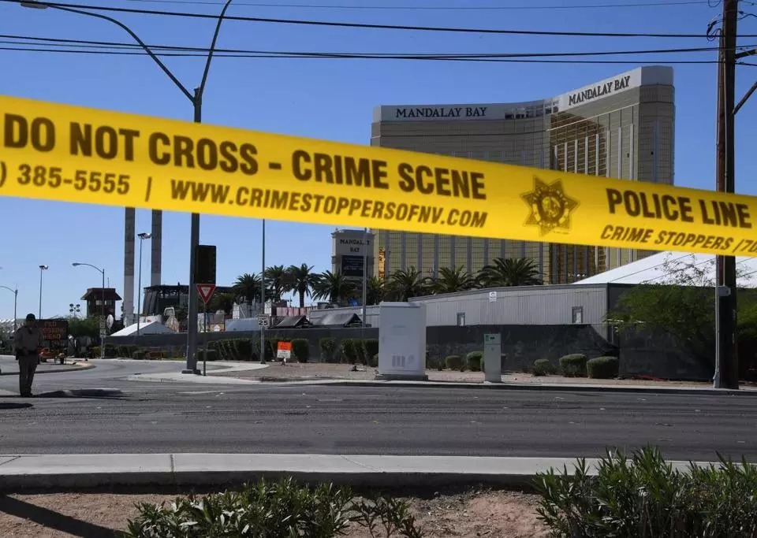

Tewksbury mother killed in Las Vegas massacre
By Michael Levenson and Aimee Ortiz GLOBE STAFF OCTOBER 02, 201

LOWELL — A Tewksbury mother who was active in her church and worked for a Cambridge design firm was killed Sunday in the massacre at the country music festival in Las Vegas, grieving family members said Monday.
Rhonda LeRocque was at the outdoor concert with her husband, Jason, and their young daughter when a gunman opened fire, killing her and at least 58 others, according to her sister, Jennifer Zelenski. The husband and daughter escaped unharmed, Zelenski said.
Rhonda LeRocque’s grandmother, Carol Marquis, said Jason LeRocque’s father had bought the family tickets for the concert.
“All I know is someone started shooting and people are running and she got shot in the head,” Marquis said Monday. “And we lost a dear, close, good person — one of the nicest people you will ever meet in your life.”
Las Vegas concertgoers on friend also in attendance: ‘We don’t know if he got out or not’
By Matt Rocheleau GLOBE STAFF OCTOBER 03, 2017

LAS VEGAS — Jake Velzl and his wife were standing in the tightly packed crowd when the shooting started. As people ran screaming, they dove to the ground. Looking back, they saw someone get shot, standing right where they had been.
“When we left, the person that took our spot got hit,” Velzl recalled on Monday, the day after the massacre that left at least 59 people dead and more than 500 injured. “It sounded like at first fireworks, and once you realized it wasn’t that, we had to get everybody down. Then we got up and ran and hid if we could. And that’s what we did to get out of there.”
The couple came from Orange County, Calf., to see the outdoor music festival, which they had attended two years ago. As of mid-afternoon, they had not heard from a friend who went to the concert but was not standing near them when the gunman opened fire.